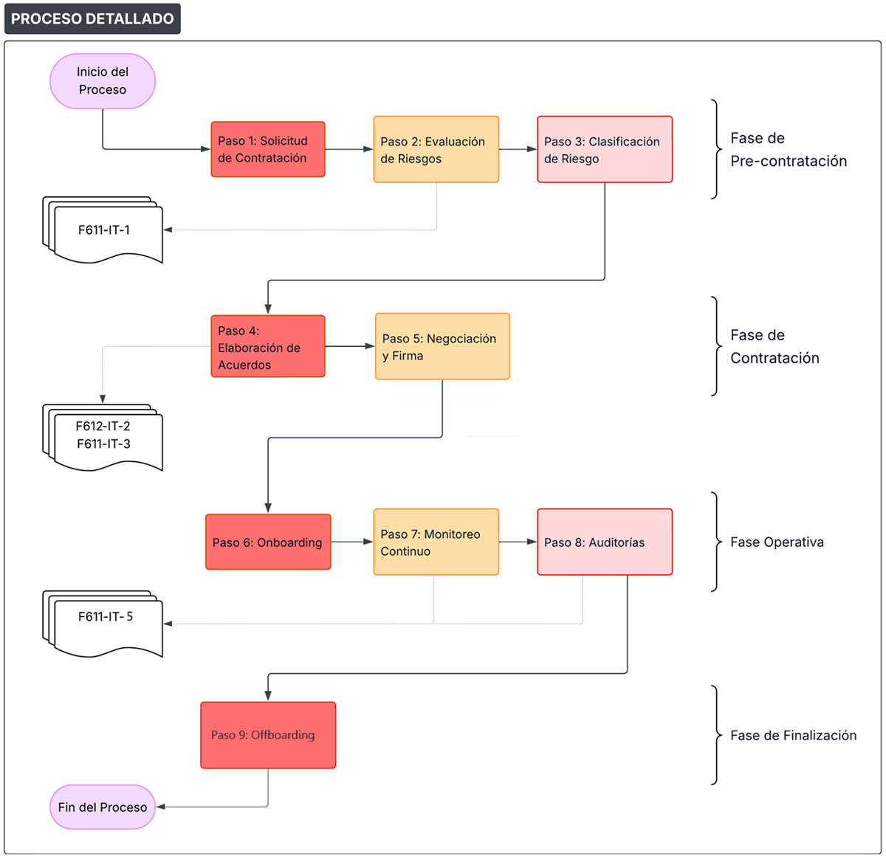

Procedimiento de Seguridad con Contratistas y Socios
1 OBJETIVO
Establecer el proceso detallado para la gestión de seguridad de la información en las relaciones con contratistas y socios de cooperación, asegurando el cumplimiento de la MC611-IT-1 Política de SI entre Contratistas y Socios. Garantizando que los contratistas y socios que acceden a sistemas o datos de la organización cumplan con los mismos estándares de seguridad de la información, mediante evaluaciones de riesgo, acuerdos contractuales y verificaciones periódicas, en cumplimiento de los requisitos de ISO/IEC 27001:2022, así como con los del marco TISAX.
2 ALCANCE
Aplica a todas las relaciones con terceros que accedan a información de PRODISMO SRL.
3 PROCESO DETALLADO
3.1. Fase de Pre-contratación
Paso 1: Solicitud de Contratación
- Responsable de área completa solicitud indicando:
- Tipo de servicio requerido
- Información a la que accederá el tercero
- Nivel de criticidad estimado
Paso 2: Evaluación de Riesgos
- Departamento IT completa
F611-IT-1 Plantilla de Evaluación de Riesgos para Terceros - Criterios de evaluación:
- Tipo de información accedida
- Nivel de acceso requerido
- Tiempo de relación
- Historial del tercero
Paso 3: Clasificación de Riesgo
- Bajo: Solo información pública
- Medio: Información interna no crítica
- Alto: Información confidencial
- Crítico: Información de clientes OEM/diseños
3.2. Fase de Contratación
Paso 4: Elaboración de Acuerdos
- Departamento IT prepara
F612-IT-2 Plantilla de Acuerdo de Confidencialidad (NDA) y Cláusulas de Seguridad
(si aplica) - Incluir cláusulas específicas según nivel de riesgo
- Para clientes OEM, incluir
F611-IT-3 Plantilla de Adenda para Requisitos de Clientes
Paso 5: Negociación y Firma
- Departamento de IT gestiona negociación
- RSI valida cláusulas de seguridad
- Archivar acuerdos firmados
3.3. Fase Operativa
Paso 6: Onboarding
- Entrega de políticas de seguridad al tercero
- Configuración de accesos según principio de mínimo privilegio
- Registro en inventario de terceros
Paso 7: Monitoreo Continuo
- Frecuencia:
- Bajo: Anual
- Medio: Anual
- Alto: Semestral
- Crítico: Trimestral
Paso 8: Auditorías
- Para riesgos Alto y Crítico, auditoría usando
F611-IT-5 Informe de Auditoría a Terceros - Frecuencia mínima anual
- Seguimiento de hallazgos
3.4. Fase de Finalización
Paso 9: Offboarding
- Revocación de accesos
- Devolución/destrucción de información
- Evaluación final de desempeño
Flujo del Proceso Detallado

Diagrama de Flujo del proceso detallado
4 REGISTROS Y FORMULARIOS
-
F611-IT-1
Plantilla de Evaluación de Riesgos para Terceros
[Completar antes de cualquier contratación]
-
F612-IT-2
Plantilla de Acuerdo de Confidencialidad (NDA) y Cláusulas de Seguridad
[Firmar antes del inicio de servicios]
-
F611-IT-3
Plantilla de Adenda para Requisitos de Clientes
[Incluir cuando correspondan requisitos OEM]
-
F611-IT-5
Informe de Auditoría a Terceros
[Emplear en auditorías programadas]
5 RESPONSABILIDADES ESPECÍFICAS
5.1. RSI
- Aprobar evaluaciones de riesgo
- Validar acuerdos de seguridad
- Realizar auditorías
- Reportar a Alta Dirección
5.2. Departamento de IT/Compras/Administración
- Mantener base de datos de terceros
- Gestionar renovaciones contractuales
- Notificar vencimientos
5.3. Responsables de Área
- Identificar necesidades de terceros
- Supervisar desempeño
- Reportar incidencias
6 GESTIÓN DE INCIDENTES
6.1. Notificación
- Terceros deben reportar incidentes dentro de 6 horas
- Utilizar canal designado: itprodismo@prodismo.com
6.2. Escalamiento
- Incidente menor: RSI y responsable de área
- Incidente mayor: Departamento de IT
- Incidente crítico: Alta Dirección y clientes afectados
7 MÉTRICAS E INDICADORES
- Tiempo promedio de evaluación de riesgos: Objetivo < 5 días
- Porcentaje de terceros con acuerdos vigentes: Objetivo 100%
- Tiempo de respuesta a incidentes: Objetivo < 6 horas
- Cumplimiento de revisiones programadas: Objetivo > 95%
8 ACTUALIZACIÓN DEL PROCEDIMIENTO
- Revisión anual por el Departaemnto de IT
- Actualización ante cambios normativos
- Mejoras basadas en lecciones aprendidas
9 REVISIONES DEL DOCUMENTO
| Rev. N° | Fecha | Descripción |
|---|---|---|
| 0 | 25/8/2025 | Primera Emisión del documento |
| 1 | 6/4/2026 | Actualización general del documento |